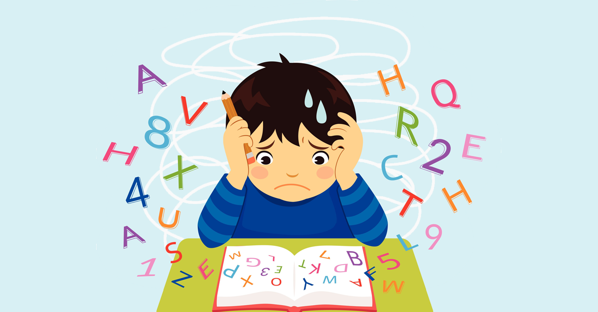

La dislexia comenzó a estudiarse a finales del siglo XIX, cuando se observaron dificultades en la lectura en personas con inteligencia normal. En 1877, Adolf Kussmaul introdujo el término “ceguera verbal”. Posteriormente, en 1896, W. Pringle Morgan describió uno de los primeros casos de dislexia del desarrollo. A lo largo del siglo XX, los avances en la psicología y la neuropsicología permitieron reconocer la dislexia como un trastorno específico del aprendizaje de origen neurobiológico. Actualmente, se comprende desde un enfoque científico que promueve la detección temprana y la educación inclusiva.
